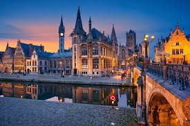

In 2019 gaan we ons 30-jarig jubileum vieren. Met een concertreis. Naar Gent in België, of naar Tavira in het uiterste zuiden van Portugal nabij Faro.
Op 18 oktober j.l. waren er presentaties van de reisplannen. Die treffen jullie hieronder aan. Uiteindelijk gaat het er natuurlijk wel om dat we zo veel mogelijk willen zingen...
|
De presentatie over de bus- en concertreis naar Gent van Hanneke tref je hier aan. |
 |

|
De presentatie over de vlieg- en concertreis naar Tavira van Marjan tref je hier aan. |
En tot slot: als jullie het formulier kwijt zijn, en ook de ReisKras tussen het oud papier is geraakt: je kunt hem ook hier nog te pakken krijgen.